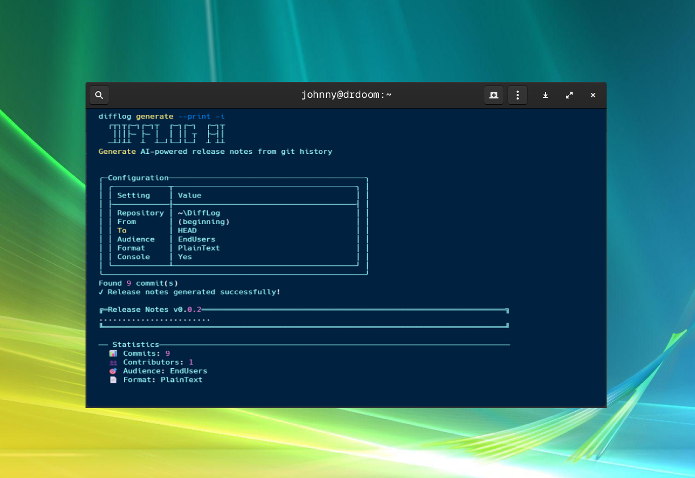

DiffLog is a CLI tool that turns git history into polished release notes using AI. It scans commits, groups changes into clear sections, and formats the result for different audiences so you can ship release notes and changelogs faster.

■ Features
- Generate notes from tags, ranges, or date filters.
- Multiple audiences and output formats (Markdown, HTML, Plain Text, JSON).
- Optional links to issues/PRs and contributor lists.
- Interactive mode for guided runs.
- Configurable system prompts per audience or per run.
- CI friendly command-line interface.
■ Installation
Install as a .NET tool:
dotnet tool install -g DiffLog■ Quick Start
difflog generate -iThat's it — the interactive mode walks you through picking a range, an audience, and an output format.
difflog generate --from v1.0.0 --to v1.1.0 --format Markdown
difflog generate -a EndUsers --format Html --output release-notes.html
difflog generate --system-prompt-file prompts/social.txt■ Commands at a Glance
| Command | Purpose |
|---|---|
difflog generate | Generate release notes from git history. |
difflog config | Store OpenAI settings and per-audience system prompts. |
difflog tags | List tags in a repository. |
See full command reference, options and GitHub Actions examples »
Tip: DiffLog reads config from environment variables (
OPENAI_API_KEY, OPENAI_BASE_URL, OPENAI_MODEL) or a saved config file — environment variables always win.
■ Dependencies
- .NET 10 SDK
- Spectre.Console / Spectre.Console.Cli
- Microsoft.Extensions.AI + OpenAI client
BEST VIEWED WITH ANY BROWSER